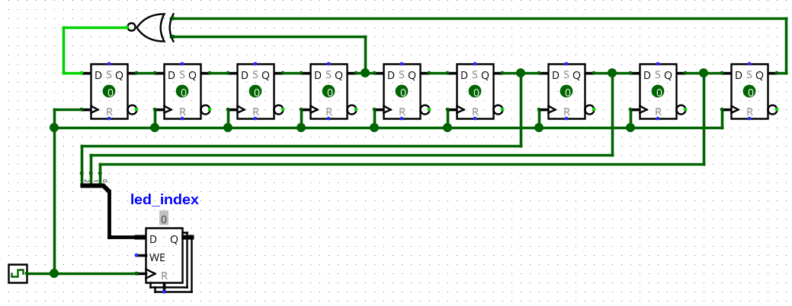

Cette activité consiste à développer un jeu de tape-taupes en utilisant des circuits logiques.
Le jeu comporte huit trous représentés par huit voyants lumineux. Lorsqu’une taupe passe la tête par l’un des trous, le voyant correspondant s’allume. Il ne peut y avoir qu’un voyant allumé à la fois.
En face de chaque voyant, un bouton-poussoir permet au joueur de frapper sur le trou correspondant. Le but du jeu est de frapper au moment où une taupe est présente.
Le comptage des points s’effectue de la manière suivante. Lorsque le joueur presse un bouton, deux cas peuvent se présenter :
Nous utiliserons un logiciel de saisie de schéma et de simulation de circuits logiques appelé Logisim-evolution. Ce logiciel est déjà présent sur les postes de travail de certaines salles de TP à l’ESEO. Pour l’exécuter, démarrez votre PC sous Ubuntu, ouvrez un terminal et saisissez la commande suivante :
java -jar /opt/logisim-evolution-3.3.0-all.jar
Si vous rencontrez des difficultés, ou si vous souhaitez travailler sur votre propre PC, vous pouvez l’installer vous-même en suivant les instructions ci-après.
La traduction française de Logisim-evolution est parfois étrange. Par exemple, on trouve l’expression « Flanc montant » au lieu de « Front montant ».
Logisim-evolution s’exécute sur la plate-forme Java, que vous devez
installer au préalable.
Si vous travaillez sous Linux, nous recommandons d’installer l’environnement
d’exécution Java (JRE) en utilisant le gestionnaire de paquets de votre distribution :
sous Ubuntu, installez simplement le paquet default-jre.
Logisim-evolution ne s’installe pas comme une application ordinaire. Il se présente comme un fichier jar que vous pouvez enregistrer à l’emplacement de votre choix.
Logisim-evolution 3.3 nécessite Java 9 ou une version ultérieure.
Si vous avez besoin de conserver une version plus ancienne de Java, téléchargez plutôt le logiciel Logisim 2.7.
Sous Windows, vous pouvez exécuter Logisim-evolution en double-cliquant sur son icône dans un navigateur de fichiers.
Vous pouvez également l’exécuter en ligne de commande.
Utilisez la commande cd pour vous déplacer dans le
dossier contenant Logisim-evolution, puis :
java -jar logisim-evolution-3.3.3-all.jar
ou
java -jar logisim-generic-2.7.1.jar
Dans cette activité, vous allez compléter un circuit de base que nous fournissons.
Ouvrez le fichier MoleBuster.circ avec Logisim-evolution.
Le circuit se compose des éléments suivants :
L0 à L7.B0 à B7.led_index lorsque enable vaut 1.
Quand enable vaut 0, toutes les sorties du décodeur sont à 0.btn_pressed)
et le numéro de ce bouton (btn_index).
Si plusieurs boutons sont pressés en même temps, le codeur ne retient
que le numéro le plus grand.Dans le menu Simulation, vérifiez que l’option Simulation enclenchée est activée. Dans la barre d’outils, pressez le bouton « ».
enable pour activer le décodeur.led_index à plusieurs reprises pour modifier sa valeur.
Observez l’effet sur l’allumage des LED L0 à L7.B0 à B7.
Observez l’effet sur les sorties btn_pressed et btn_index.Dans la barre d’outils, pressez le bouton « » pour revenir en mode édition.
Supprimez le port led_index et remplacez-le par un compteur modulo 8.
Le principe de construction d’un tel compteur est expliqué dans la section
Registres et compteurs.
Pour un compteur dont le modulo est une puissance de deux, sous Logisim-evolution, les composants suivants suffisent. Nous avons indiqué entre parenthèses la correspondance pour Logisim 2.7 lorsque ce n’est pas une traduction directe :
| Catégorie | Composant | Paramétrage |
|---|---|---|
| Mémoire / Séquentiel (Memory) | Registre | Largeur données (Data Bits) = 3, Label = led_index |
| Arithmétique | Additionneur | Largeur données (Data Bits) = 3 |
| Câblage (Wiring) | Constante | Largeur données (Data Bits) = 3, Valeur = 1 |
| Câblage (Wiring) | Horloge | Durée haute = Durée basse = 1 Tic |
N’utilisez pas le composant Compteur de Logisim !
Le registre possède une entrée WE (Write Enable) et une entrée R (Reset).
À cette étape, laissez ces deux entrées non connectées.
Le registre mettra sa valeur à jour à chaque front montant de son entrée
horloge.
Dans le menu Simulation :
Observez le fonctionnement du circuit.
Lorsque l’entrée enable du décodeur est à 1, les voyants doivent s’allumer
pendant une seconde à tour de rôle.
Dans le menu Simulation, décochez l’option Tics activés avant de passer à l’étape suivante.
Nous souhaitons laisser un peu de temps entre l’extinction d’une LED et l’allumage de la suivante. Nous allons travailler avec une horloge plus rapide pour mesurer le temps avec une plus grande précision.
Nous utiliserons une horloge de 8 Hz et nous ferons en sorte que chaque LED soit allumée pendant 8 périodes d’horloge (soit une seconde), puis éteinte pendant 2 périodes d’horloge (un quart de seconde). Il faut donc compter 10 périodes d’horloge par LED.
Dans la barre d’outils, pressez le bouton « » pour revenir en mode édition.
Construisez un compteur modulo 10 en utilisant les composants suivants :
| Catégorie | Composant | Paramétrage |
|---|---|---|
| Mémoire / Séquentiel (Memory) | Registre | Largeur données (Data Bits) = ?, Label = timer |
| Arithmétique | Additionneur | Largeur données (Data Bits) = ? |
| Arithmétique | Comparateur | Largeur données (Data Bits) = ?, Type numérique = Non signé |
| De/Multiplexeurs, Encodeurs (Plexers) | Multiplexeur | Largeur données (Data Bits) = ?, Select Bits = 1 |
| Câblage (Wiring) | Constante | Largeur données (Data Bits) = ?, Valeur = ? |
Réglez la largeur de données de ces composants pour qu’ils puissent traiter des valeurs comprises entre 0 et 9.
Utilisez le composant horloge déjà présent sur le schéma pour synchroniser
le registre timer.
Votre circuit doit maintenant contenir deux compteurs, un compteur modulo 8 et
un compteur modulo 10, avec la même horloge.
Mettez en cascade ces deux compteurs : reliez l’entrée WE du registre led_index
pour qu’il se mette à jour à chaque fois que timer vaut 9.
Pour terminer, supprimez le port enable et remplacez-le par un comparateur
paramétré de la même manière que celui du compteur modulo 10.
Faites en sorte que le décodeur soit activé quand timer est compris entre 0 et 7.
Dans le menu Simulation :
Observez le comportement de l’allumage des LED.
Dans le menu Simulation, décochez l’option Tics activés avant de passer à l’étape suivante.
Une taupe est touchée lorsque les trois conditions suivantes sont vérifiées simultanément :
Le joueur rate son coup lorsqu’il presse un bouton et que l’une des conditions suivantes est vérifiée :
Dans la barre d’outils, pressez le bouton « » pour revenir en mode édition.
Complétez le circuit en ajoutant deux LED. L’une s’allumera en cas de succès (hit), l’autre en cas d’échec (miss). Vous pourrez utiliser les composants suivants :
| Catégorie | Composant | Paramétrage |
|---|---|---|
| Portes logiques (Gates) | Porte NOT | Largeur données (Data Bits) = 1 |
| Portes logiques (Gates) | Porte AND | Largeur données (Data Bits) = 1, Nombre d'entrées = 2 ou 3 |
| Portes logiques (Gates) | Porte OR | Largeur données (Data Bits) = 1, Nombre d'entrées = 2 ou 3 |
| Portes logiques (Gates) | Porte NAND | Largeur données (Data Bits) = 1, Nombre d'entrées = 2 ou 3 |
| Portes logiques (Gates) | Porte NOR | Largeur données (Data Bits) = 1, Nombre d'entrées = 2 ou 3 |
| Arithmétique | Comparateur | Largeur données (Data Bits) = ? |
| Entrée/Sortie | LED | Label = hit ou Label = miss |
Essayez d’utiliser le plus petit nombre de portes possible.
Dans le menu Simulation :
Pendant que les LED s’allument et s’éteignent à tour de rôle, pressez les boutons de manière à provoquer des succès et des échecs.
Vérifiez que les LED hit et miss s’allument de la manière attendue.
Vous pouvez diminuer la fréquence des tics pour mieux observer différentes situations.
Dans le menu Simulation, décochez l’option Tics activés avant de passer à l’étape suivante.
Pour compter les scores, vous ajouterez au circuit deux compteurs modulo 16 :
un pour compter les succès, l’autre pour compter les coups manqués.
Ces compteurs se mettront à jour au passage à 1 des signaux hit et miss.
Pour respecter les règles de conception de circuits synchrones,
on s’interdira de relier hit et miss directement aux entrées horloges de
ces compteurs.
La détection synchrone du passage à 1 d’un signal x s’effectue en comparant
deux versions, x1 et x2, de ce signal décalées dans le temps :
Sur ce chronogramme, lorsque x1=1 et x2=0, cela signifie que x
vient de passer à 1. Cette situation est matérialisée par le passage à 1
du signal e pendant une période d’horloge.
Proposez un schéma permettant de produire le signal e ci-dessus à partir
d’un signal x.
Dans Logisim-evolution, reproduisez ce schéma pour x=hit et pour x=miss
de manière à piloter les entrées WE de deux compteurs modulo 16.
Utilisez des afficheurs 7 segments pour afficher les valeurs de ces compteurs.
À cette étape, les composants utilisables sont :
| Catégorie | Composant | Paramétrage |
|---|---|---|
| Mémoire / Séquentiel (Memory) | Registre | Largeur données (Data Bits) = ? |
| Mémoire / Séquentiel (Memory) | D Flip-Flop | |
| Arithmétique | Additionneur | Largeur données (Data Bits) = ? |
| Câblage (Wiring) | Constante | Largeur données (Data Bits) = ?, Valeur = ? |
| Portes logiques (Gates) | Porte AND | Largeur données (Data Bits) = 1, Nombre d'entrées = 2 |
| Entrée/Sortie | Afficheur hexadécimal (Hex Digit Display) |
Utilisez le composant horloge déjà présent sur le schéma pour synchroniser les bascules et registres que vous venez d’ajouter.
Dans le menu Simulation :
Pendant que les LED s’allument et s’éteignent à tour de rôle, pressez les boutons de manière à provoquer des succès et des échecs.
Vérifiez que les afficheurs se mettent à jour de la manière attendue.
Dans le menu Simulation, décochez l’option Tics activés avant de passer à l’étape suivante.
Pour rendre le jeu moins prévisible, nous allons remplacer le compteur
led_index par un générateur de nombres pseudo-aléatoires
sur le principe du registre à décalage à rétroaction linéaire
(ou LFSR pour Linear Feedback Shift Register).
Supprimez l’additionneur en amont du registre led_index.
Sans modifier le câblage de l’entrée WE et de la sortie du registre
led_index, ajoutez le générateur de nombres pseudo-aléatoires représenté sur
le schéma ci-dessous :

Les composants utilisés sont :
| Catégorie | Composant | Paramétrage |
|---|---|---|
| Mémoire / Séquentiel (Memory) | D Flip-Flop | |
| Portes logiques (Gates) | Porte XNOR | Largeur données (Data Bits) = 1, Nombes d'entrées = 2 |
| Câblage (Wiring) | Répartiteur (Splitter) | Orientation (Facing) = Nord, Nbr Terminaisons (Fan Out) = 3, Largeur faisceau (Bit Width In) = 3, Apparence = A gauche |
Utilisez le composant horloge déjà présent sur le schéma pour synchroniser les bascules que vous venez d’ajouter.
Dans le menu Simulation :
Observez l’ordre d’allumage des LED.
Faites fonctionner le jeu et tentez d’obtenir 16 hits consécutifs.
Actuellement, le jeu ne compte que les coups réussis et les coups manqués. Proposez une solution pour connaître le nombre de fois où un joueur n’a pressé aucun bouton pendant qu’une LED était allumée.
Pour terminer, proposez un circuit affichant un score global tenant compte du nombre de succès, du nombre de coups manqués et du nombre de fois où le joueur n’a pas pressé de bouton.
{kind=link}